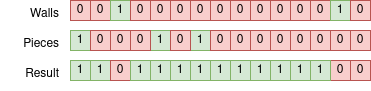
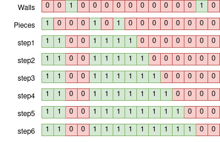
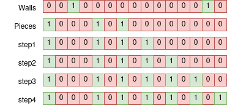
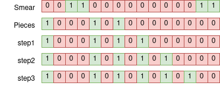
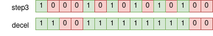

Sub-linear bitfield floodfill
Here’s the problem. We have two bitfields: the first indicates the positions of various walls on a 1D line. The second is the positions of our pieces, who act like chess queens. Our desired result is a bitfield indicating all the positions that are reachable by our pieces.
Here’s an example case:

Motivation
This is the core building block in an efficient implementation of the min-distance-heuristic. This heuristic basically takes a grid, two sets of queen-like pieces, and asks how many moves our pieces take to get to each square, compared to our opponent. This is, as far as I know, still the core of the state of the art for a heuristic for The Game of the Amazons. Amazons is, in my opinion, the most elegant boardgame ever invented. Sadly, it also shares a name with the 2nd second largest company in the world, making it sometimes hard to find information for.
I came up with this algorithm for the floodfill problem while working on a now-abandoned minimax solver for Amazons. Multithreading is hard, and the knowledge that ML will pummel this kind of method nowadays is a little disheartening. ML is cool and all, it just doesn’t scratch the itch that cracking open a profiler and sanding down that function taking 12% of your runtime down to 7% does.
You can build the min-dist heuristic by running looping floodfill in all directions for each side until you reach a steady state. Amazons is played on a 10x10 grid, so you have to use a 128 bit register (really 256 so you do both sides simultaneously) instead of the beautiful 64-bit perfect fit of a chessboard. You still want to represent the board with a trio of bitfields instead of an array of bytes however, its both smaller and lets you operate on the whole board in parallel. The extra 28 bits also give you some room to hide some extra walls between rows to prevent pieces from wrapping around.
Solution
From now on we’ll just consider only going to the right, the extra direction doesn’t add anything interesting.
Now the simplest thing to do is simply to loop shift 1, &, | N times in the left direction, ~*3N total ops. You can add an early termination if you want, but it won’t help your worst case.

What really kills us, our worst case, is large empty stretches, in particular if a bit needs to go from one end of the field all the way to the other. We can actually do this in a sub-linear fashion however. Consider what happens if we just shift over two at a time, what I call ‘galloping’. We cover empty areas at twice the speed. However, walls are now an issue, we’ll phase right through them.

We can compensate for this by ‘smearing’ our walls over 1 bit, making them too wide to phase through.

We have one last problem, we will usually skip over squares and leave them unfilled unless multiple offset piece patterns cover that area. You have two possible solutions to this, either ‘accelerate’ to your galloping speed by doing a shift 1 before your shift 2 loop, or ‘decelerate’ from it by doing a shift 1 at the end.

Complexity
This scales up to larger galloping speeds as well, you just need progressively larger smears and more accel/decel, so you need large enough N for it to be worthwhile. For Amazons N=10, so obviously you’re never really flying, but at least its still faster than our shift 1 loop above. How fast is galloping for large N though? It makes my head hurt to figure out the exact complexity, considering once you get to galloping fast enough, it becomes optimal to gallop while decelerating and smearing, recursively. We can pretty easily show that we’re sublinear though. Suppose galloping were linear, for some constant c. Please permit me these shortcuts and abuse of notation, its been a while since I was in school. If we gallop at speed c+1, then we need at most shift-and-or iterations to go N squares. Here the assumes a loop of shift 1 to decelerate and smear, we could do better, but we don’t need to. grows arbitrarily large with N linearly, the does not grow with N, hence for sufficiently large N, galloping can be faster than , contradicting our assumption.
Alternatives
If there is a good arithmetic trick to replace this, I would be interested to see it. The wrinkles to arithmetic replacements is they need to tolerate multiple pieces in an area, and to work in at least 4 directions, preferably all 8. Another option would be bitscan asm instructions, but you end up needing a lot if the wall density is high. For small N like Amazons, a lookup table might be faster, and will solve two directions simultaneously, though it will have many many entries, and you still have to extract your 10 bits from weird diagonals and such.